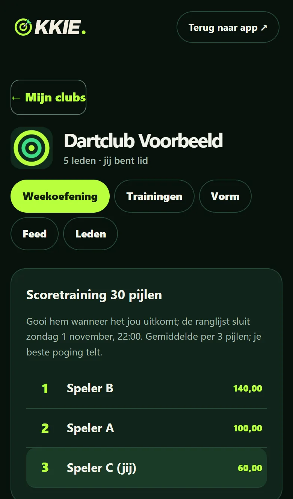
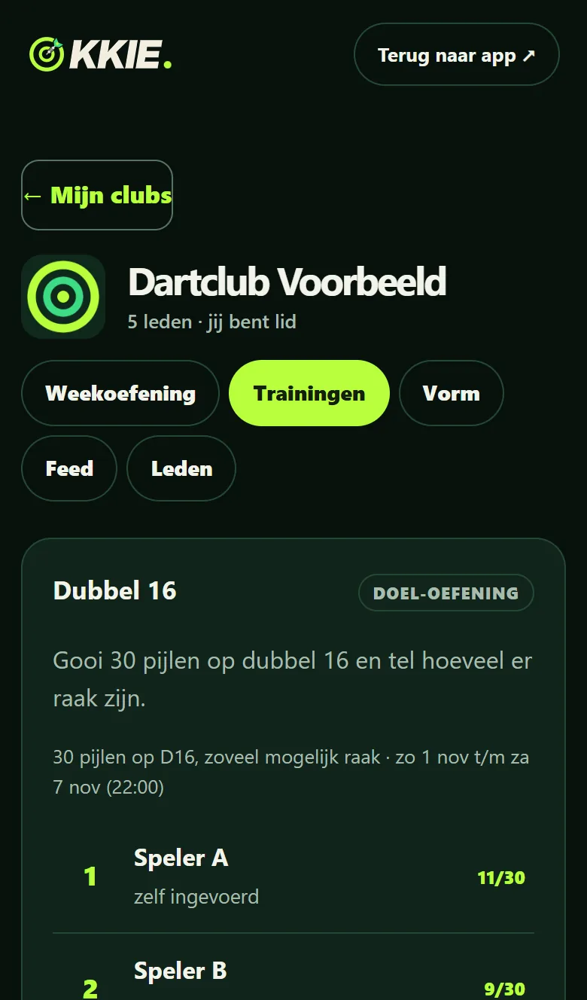
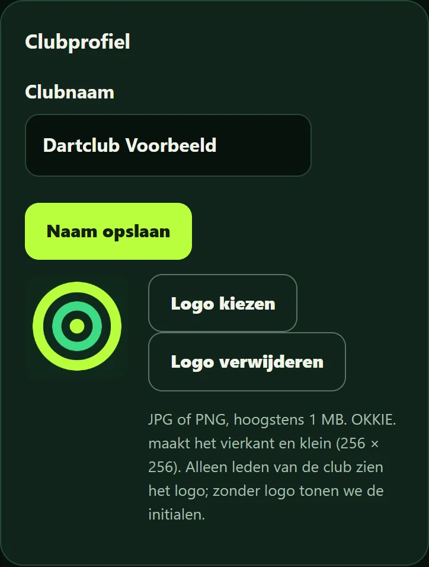

Besloten clubruimte
Alleen leden van jouw club zien de resultaten. Lid worden gaat met een clubcode of QR-code, en de beheerder laat je toe. Niets is openbaar.
Een besloten clubruimte in de OKKIE.-app. Iedereen gooit de weekoefening thuis of op de club, wanneer het uitkomt; alleen clubgenoten zien de resultaten. Voor de week tussen twee speelavonden, niet voor de competitie.
Gratis voor iedere vereniging, team of vaste groep. Richt in een minuut een club op in de app en nodig je clubgenoten uit met een link of QR-code.
Start gratis een clubKreeg je een uitnodiging? Open de link uit je uitnodiging; die brengt je meteen naar de juiste club.



Schermafbeeldingen met fictieve gegevens.
Alleen leden van jouw club zien de resultaten. Lid worden gaat met een clubcode of QR-code, en de beheerder laat je toe. Niets is openbaar.
Elke week één vaste oefening. Iedereen gooit hem wanneer het uitkomt; de clubranglijst sluit zondagavond. Je beste poging telt.
Per oefening een ranglijst, plus een vormranglijst met het gemiddelde van de laatste vier weken. Handig voor de captain vóór de speelavond.
De beheerder stelt de clubnaam in en voegt een clublogo toe. Ook dat zien alleen leden van de club.
Scoretraining met een eigen aantal pijlen, rond de klok, een doel-oefening (bijvoorbeeld 30 pijlen op dubbel 16) of een checkout-reeks. Voor de hele club of één team, met een eigen ranglijst.
Wie wil, deelt een training in de clubfeed. Dat kies je per training; standaard gaat er niets heen.
1. Open OKKIE. en maak je speler aan. 2. Kies OKKIE. Club → Gratis een club oprichten. 3. Deel de uitnodigingslink of QR-code met je clubgenoten en laat ze toe. Vragen of ideeën? Mail info@denckh.nl.
Start gratis een club